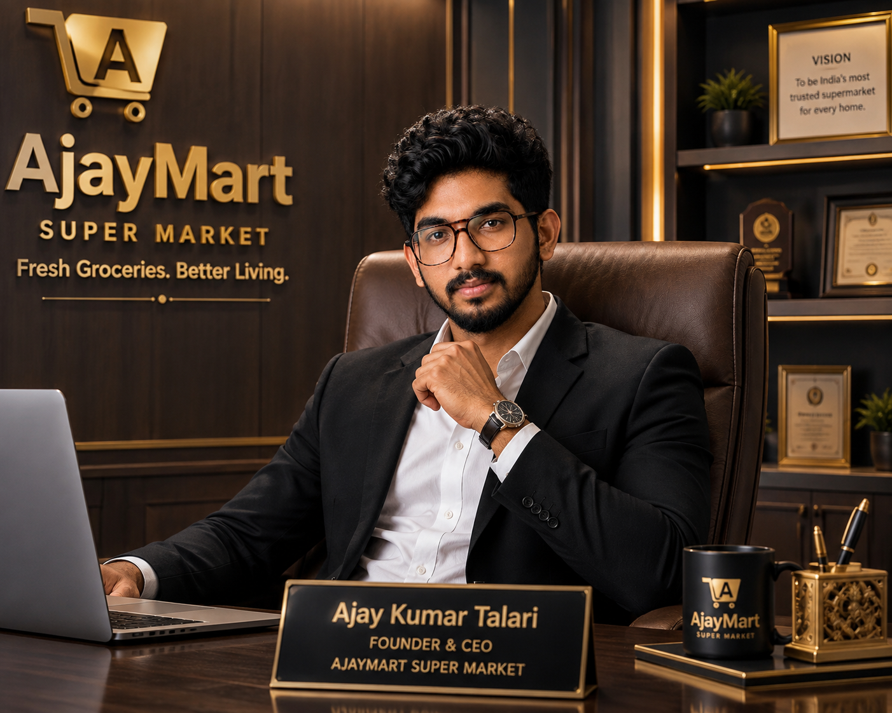

FOUNDER & CEO
Ajay Kumar Talari
Founder & CEO · AjayMart Super Market
Ajay Kumar Talari leads AjayMart with a simple vision: make quality groceries, fair value and a welcoming shopping experience accessible to every home.
He created the AjayMart website as a modern digital storefront where customers can discover products, explore offers, manage their carts and track their orders.

48+Everyday products
8Shopping categories
4.9★Customer rating
7 AM–10 PMStore hours
OUR PROMISE
Freshness you can feel.
01 · QUALITY
Fresh-first selection
Practical everyday products presented with clarity.
02 · VALUE
Smart offers
Discover useful deals without a complicated shopping journey.
03 · CONVENIENCE
Easy from start to cart
Search, browse and manage your basket in seconds.
04 · VISION
A modern local store
A friendly supermarket identity with a creative digital experience.